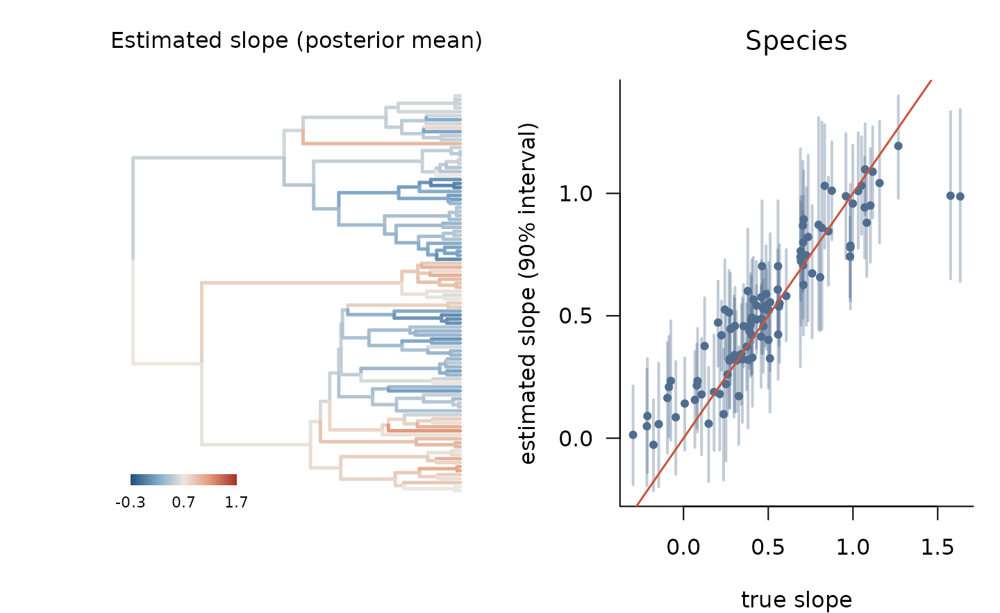
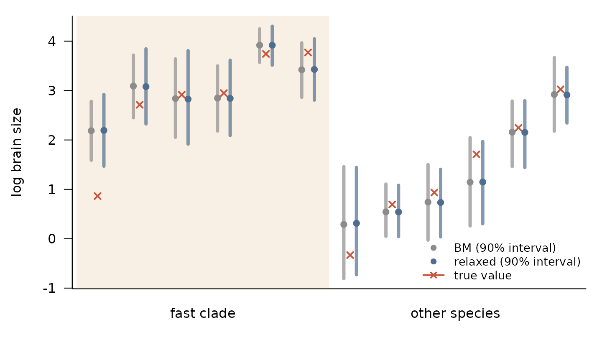

Several records per species, known errors and new species
Source:vignettes/records-new-species.Rmd
records-new-species.RmdComparative data are rarely one clean value per species. A species may be represented by several records, such as population means from different studies, each with its own standard error. Some species in the tree may have no data at all. This vignette works through three examples:
- records with known standard errors: several records per species, each with its own measurement error, separated from true variation within species;
- an evolving slope with individual data: a regression slope that evolves along the tree, estimated from records rather than species means;
-
predicting species without data under kernels with
latent values, such as
k_relaxed(), where the prediction has to account for the rate on the new species’ own branch.
Each example simulates its own data, so the true values are known.
All models are fitted with Stan, so the vignette needs
cmdstanr and CmdStan. The article “What works with what” on
the package website lists which kernels combine with which features.
library(phylogp)
set.seed(13)
tr <- ape::rphylo(100, birth = 1, death = 0) # a pure-birth tree
tr$edge.length <- tr$edge.length / max(ape::node.depth.edgelength(tr)) # height 1
N <- ape::Ntip(tr)Records with known standard errors
Suppose each record is a population mean taken from the literature, based on a few to a few dozen specimens, and reported with its standard error. A species has one to five such records. Records of a species differ for two reasons: real differences among populations (variation within the species) and sampling error, which the standard errors describe. Both are added to the variance of a record:
where
is the species value, given by the kernel, and
is within_sigma. Records with small standard errors count
for more. The likelihood is exact and stays linear in the number of
species.
We simulate species values from Brownian motion plus a non-phylogenetic species effect, variation among populations with standard deviation 0.15, and standard errors from for specimens.
set.seed(1)
mu <- kernel_simulate(k_bm() + k_white(), tr,
pars = list(bm1 = list(sigma = 1), white1 = list(sigma = 0.2)))[, 1]
rec <- data.frame(species = rep(tr$tip.label, sample(1:5, N, replace = TRUE)))
rec$n <- sample(3:40, nrow(rec), replace = TRUE) # specimens per record
rec$se <- 0.8 / sqrt(rec$n)
rec$y <- 1 + mu[rec$species] + rnorm(nrow(rec), 0, 0.15) + rnorm(nrow(rec), 0, rec$se)
nrow(rec)
#> [1] 308
summary(rec$se)
#> Min. 1st Qu. Median Mean 3rd Qu. Max.
#> 0.1265 0.1431 0.1668 0.2008 0.2241 0.4619We fit the model twice, once with the standard errors
(se = "se") and once without them.
f_se <- phylo_gp(y ~ 1, rec, tr, k_bm() + k_white(),
species = "species", se = "se", seed = 1)
f_nose <- phylo_gp(y ~ 1, rec, tr, k_bm() + k_white(),
species = "species", seed = 1)
f_se
#> Phylogenetic Gaussian process
#> Formula: y ~ 1
#> Kernel: bm() + white()
#> Tips: 100 (308 rows; within-species sd: within_sigma)
#> Likelihood: pruning (linear time)
#> Method: Bayesian (HMC)
#>
#> parameter mean sd q5 q95 rhat ess_bulk
#> 1 (Intercept) 1.246 0.4623 0.4633 2.027 1 2746
#> 2 bm1_sigma 0.931 0.1092 0.7618 1.122 1 2088
#> 3 white1_sigma 0.156 0.0591 0.0453 0.249 1 1048
#> 4 within_sigma 0.170 0.0181 0.1410 0.200 1 2828The model without standard errors has no way to tell sampling error
from real differences among populations, so it puts both into
within_sigma:
pick <- function(f) summary(f)[summary(f)$parameter == "within_sigma", c("mean", "q5", "q95")]
rbind("with se" = pick(f_se), "without se" = pick(f_nose), truth = c(0.15, NA, NA))
#> mean q5 q95
#> with se 0.1697338 0.1410148 0.2002318
#> without se 0.2817487 0.2593231 0.3052752
#> truth 0.1500000 NA NAWith the standard errors, within_sigma is close to the
true 0.15. Without them it is nearly twice the true value, and it then
describes the quality of the records as much as the biology. The
difference matters when within_sigma is itself of interest,
for example when comparing variation within species to variation among
them, and it also changes how much each record counts: without standard
errors, a record from three specimens counts as much as one from
forty.
predict() works as for any other fit. For a fit with
several rows per species, newdata names species in the same
column as the data, and type = "response" predicts a new
record, including within_sigma (a new record’s own standard
error is not known, so it is not added).
An evolving slope with individual data
k_slope("body") * k_bm() gives a regression slope that
evolves along the tree as Brownian motion: each species has its own
slope, and related species have similar ones (Hadfield and Nakagawa 2010). With
several records per species, each record contributes its own predictor
value, so the slope of a species is informed both by where the species
sits relative to others and by the variation among its own records.
We simulate body size for each species, three to eight individuals per species around it, and a brain–body slope whose deviation from 0.7 evolves along the tree.
set.seed(5)
body_sp <- kernel_simulate(k_bm(), tr, pars = list(bm1 = list(sigma = 1.5)))[, 1]
slope_dev <- kernel_simulate(k_bm(), tr, pars = list(bm1 = list(sigma = 0.5)))[, 1]
resid_sp <- kernel_simulate(k_bm() + k_white(), tr,
pars = list(bm1 = list(sigma = 0.5), white1 = list(sigma = 0.1)))[, 1]
ind <- data.frame(species = rep(tr$tip.label, sample(3:8, N, replace = TRUE)))
ind$body <- body_sp[ind$species] + rnorm(nrow(ind), 0, 0.4)
centre <- mean(ind$body)
ind$brain <- 0.5 + (0.7 + slope_dev[ind$species]) * (ind$body - centre) +
resid_sp[ind$species] + rnorm(nrow(ind), 0, 0.2)
true_slope <- 0.7 + slope_dev
nrow(ind)
#> [1] 533We compare a constant slope with a slope that evolves along the tree.
body is centred at its mean over all records, the reference
point for the slope deviations.
f_const <- phylo_gp(brain ~ body, ind, tr, k_bm() + k_white(),
species = "species", seed = 1)
f_vary <- phylo_gp(brain ~ body, ind, tr,
k_bm() + k_slope("body") * k_bm() + k_white(),
species = "species", seed = 1)
loo::loo_compare(list("constant slope" = loo(f_const),
"evolving slope" = loo(f_vary)))
#> model elpd_diff se_diff p_worse diag_diff diag_elpd
#> evolving slope 0.0 0.0 NA 3 k_psis > 0.7
#> constant slope -76.1 15.0 1.00Leave-one-out leaves out a whole species, all its records at once, so
the comparison asks how well each model predicts a species it has not
seen. The evolving slope wins clearly. A few species are flagged with
Pareto
;
in a real analysis, loo_refit() recomputes their
contributions exactly (see
vignette("slopes-prediction", package = "phylogp")).
varying_slopes() returns the posterior slope of every
species and node:
vs <- varying_slopes(f_vary)
tips <- vs[!is.na(vs$label), ]
truth <- true_slope[tips$label]
op <- par(mfrow = c(1, 2), mar = c(4, 4.5, 3, 1))
ft <- f_vary$tree
plot_tree_values(ft, vs$mean[ft$edge[, 2]], center = 0.7, lim = 1,
main = "Estimated slope (posterior mean)")
plot(truth, tips$mean, type = "n", las = 1, bty = "l",
ylim = range(tips$q5, tips$q95), xlab = "true slope",
ylab = "estimated slope (90% interval)", main = "Species", font.main = 1)
segments(truth, tips$q5, y1 = tips$q95, col = adjustcolor(cols["blue"], 0.35), lwd = 2)
points(truth, tips$mean, pch = 19, cex = 0.7, col = cols["blue"])
abline(0, 1, col = cols["red"], lwd = 1.5)
par(op)
c(correlation = cor(truth, tips$mean),
coverage_90 = mean(tips$q5 < truth & truth < tips$q95))
#> correlation coverage_90
#> 0.9214576 0.8600000The slopes along the tree are recovered well. Each species
contributes several body sizes, so its own records inform its slope, not
only its relatives. Species with extreme slopes in clades whose other
members have ordinary ones are still shrunk towards their relatives, as
for the two points at the right. Standard errors per record
(se) can be added to this model in the same way as
above.
Predicting species without data under variable rates
Predicting a species that is in the tree but has no data is kriging
on the tree (Garland
and Ives 2000): the species is predicted from its relatives
through the kernel. Under Brownian motion the kernel is fixed once its
parameters are. Under k_relaxed() the rate of evolution
varies along the tree, and the rate on the branch leading to a new
species was never fitted, because that branch was not in the fitted
tree. predict() draws it, for each posterior draw, from its
distribution given the fitted rates: a Brownian bridge along the fitted
branch that the new species joins, and Brownian motion along its own
branch. A species that joins a fast-evolving clade therefore inherits a
high rate, and with it a wider prediction interval.
We simulate a clade of about 20 species whose trait evolves 8 times
faster than elsewhere, as in
vignette("phylogp", package = "phylogp").
clade_sizes <- lengths(ape::prop.part(tr))
fast_node <- N + which.min(abs(clade_sizes - 20))
descendants <- function(node) {
kids <- tr$edge[tr$edge[, 1] == node, 2]
c(node, unlist(lapply(kids, descendants)))
}
in_clade <- descendants(fast_node)
fast_tips <- tr$tip.label[intersect(in_clade, seq_len(N))]
set.seed(7)
z <- numeric(N + tr$Nnode)
z[in_clade] <- log(8)
body <- kernel_simulate(k_bm(), tr, pars = list(bm1 = list(sigma = 1.5)))[, 1]
resid <- kernel_simulate(k_relaxed() + k_white(), tr,
pars = list(relaxed1 = list(sigma = 1, z = z),
white1 = list(sigma = 0.1)))[, 1]
d <- data.frame(body = body, brain = 0.5 + 0.7 * body + resid[names(body)])We hold out six species in the fast clade and six elsewhere, fit Brownian motion and the relaxed-rate kernel to the remaining 88, and predict the twelve held-out species from their body sizes and positions in the tree.
set.seed(3)
held <- c(sample(fast_tips, 6), sample(setdiff(tr$tip.label, fast_tips), 6))
train <- d[setdiff(rownames(d), held), ]
f_bm <- phylo_gp(brain ~ body, train, tr, k_bm() + k_white(), seed = 1)
f_relaxed <- phylo_gp(brain ~ body, train, tr, k_relaxed() + k_white(), seed = 1)
p_bm <- predict(f_bm, newdata = d[held, ], tree = tr)
p_relaxed <- predict(f_relaxed, newdata = d[held, ], tree = tr)The fits only contain the 88 training species; tree = tr
supplies the full tree, so predict() knows where the
held-out species attach.
p <- rbind(cbind(p_bm, model = "BM"), cbind(p_relaxed, model = "relaxed"))
p$truth <- d[p$species, "brain"]
p$fast <- p$species %in% fast_tips
ord <- held[order(!held %in% fast_tips, d[held, "brain"])]
x <- match(p$species, ord) + ifelse(p$model == "BM", -0.15, 0.15)
mcol <- ifelse(p$model == "BM", cols["grey"], cols["blue"])
op <- par(mar = c(4, 4.5, 1, 1))
plot(x, p$mean, type = "n", las = 1, bty = "l", xaxt = "n",
ylim = range(p$q5, p$q95, p$truth), xlab = "", ylab = "log brain size")
rect(0.5, par("usr")[3], 6.5, par("usr")[4], col = adjustcolor(cols["gold"], 0.15), border = NA)
segments(x, p$q5, y1 = p$q95, col = adjustcolor(mcol, 0.7), lwd = 4)
points(x, p$mean, pch = 19, col = mcol)
points(seq_along(ord), d[ord, "brain"], pch = 4, lwd = 2, col = cols["red"])
axis(1, at = c(3.5, 9.5), labels = c("fast clade", "other species"), tick = FALSE)
legend("bottomright", c("BM (90% interval)", "relaxed (90% interval)", "true value"),
pch = c(19, 19, 4), col = cols[c("grey", "blue", "red")], lwd = c(NA, NA, 2),
bty = "n", cex = 0.85)
par(op)
p$width <- p$q95 - p$q5
p$covered <- p$q5 < p$truth & p$truth < p$q95
aggregate(cbind(width, covered) ~ model + fast, data = p, FUN = mean)
#> model fast width covered
#> 1 BM FALSE 1.576434 1.0000000
#> 2 relaxed FALSE 1.453974 1.0000000
#> 3 BM TRUE 1.190170 0.8333333
#> 4 relaxed TRUE 1.402737 0.8333333Brownian motion fits one rate to the whole tree, a compromise between the fast clade and the rest, so its intervals have about the same width everywhere. The relaxed-rate kernel makes them wider in the fast clade and narrower elsewhere. With twelve species the difference is modest, and both models miss the same species in the fast clade, but the direction is the one expected: the relaxed kernel’s uncertainty follows the rate of evolution where the species sits. The point estimates hardly differ, because both models predict a species mainly from its closest relatives.
The same holds for the other kernels with latent values. Under
k_rate_time() a new species uses the fitted rates of the
time intervals its branch spans. Under Student-t residuals,
k_white(df = 4), a new species’ variance multiplier is
drawn from its prior, so its predictive distribution has heavier tails
than a Gaussian. Under k_slope("body") * k_bm() its slope
deviation is drawn along its branch, as for relaxed rates, so its
prediction uses a slope close to those of its relatives.